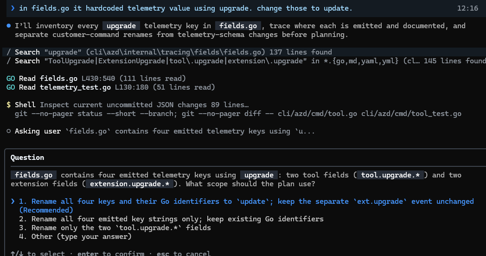
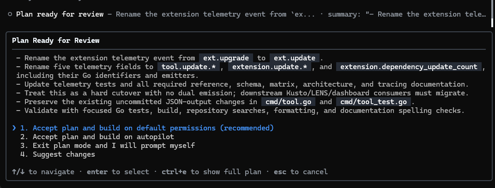
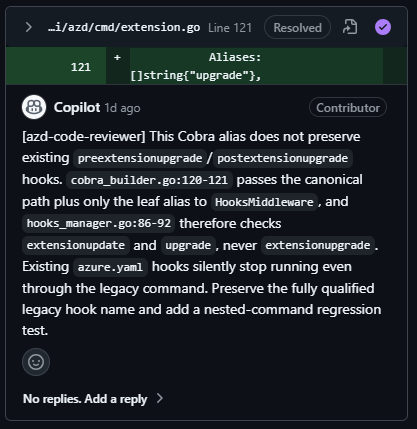
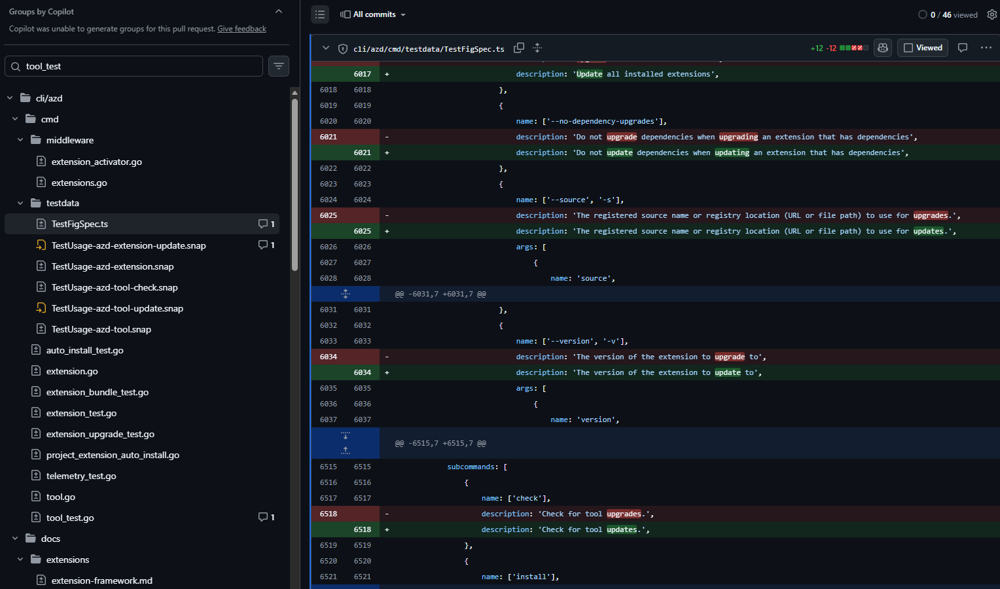

CURRENT
azd extension upgrade
azd tool upgrade
CUSTOMER-FACING TEXT
“Upgrading extension…”
“Check for tool upgrades.”
Azure Developer CLI · GitHub Copilot
mission objective
“Upgrading extension…”
“Check for tool upgrades.”
“Updating extension…”
“Check for tool updates.”
my first estimate
Two commands. A few strings. Estimated difficulty: easy.
“Change the customer-facing commands and text from ‘upgrade’ to ‘update’.”
The human effort is the signal — not every internal tool action.
planning changed the quality of the work


a prompt that helped me learn, not just approve
“Walk me through the repository structure and each change in simple language, with examples.”
unexpected scope
Aliases, help, flags, prompts.
Behavior and output expectations.
Generated help and completions.
Future events should say “update.”
Preserve only real contracts.
Examples and error guidance.
I reviewed it again and again. Then I started finding the things I did not know to question.
review did not create confidence
Nothing looked broken. I still couldn’t say it was correct.
Then I started finding things that genuinely surprised me.
It protected old values before proving anyone used them.
compatibility without evidence
Users and scripts may still call it.
We checked: nothing depended on it.

the funny hallucination loop

the generated-files mistake
Edit snapshots by hand.
Run the canonical generator.
the thing that helped most was not a prompt
The missing context was not visible in the diff.
I did not explain every file. I brought the ones I could not confidently judge.
Some files were unused. Telemetry mappings mixed hard-coded and derived keys.
The engineer found changes neither Copilot nor I knew to suggest.
Copilot showed the files. The engineer explained the system behind them.
prompts I would reuse
“Inventory aliases, JSON, telemetry, internals, and history. Preserve only real contracts.”
“Fix it only if technically correct. Verify the premise first.”
“Compare with main. Flag scope creep, breaks, and missing tests.”
“Do not push. Summarize changes, reasons, non-changes, and validation.”
what I would tell myself before starting
Easy to generate does not mean safe to ship.
Copilot writes code; people understand dependencies.
Generated files, confident feedback, speculative compatibility.
A second opinion might have changed the outcome.
Being a builder now means knowing what to verify, not just what to ask for.
open questions
Three questions I’m carrying forward.
What works for you?